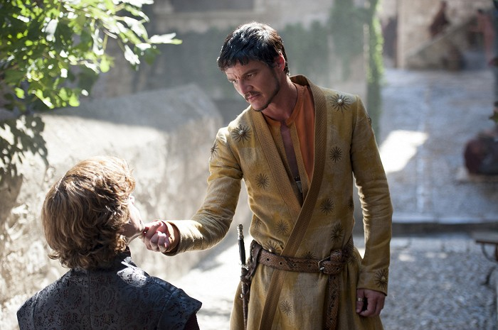
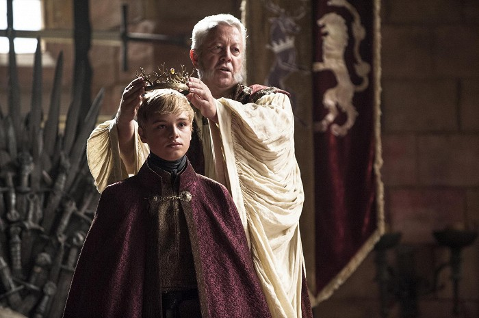

Ve svém semestrálním projektu bychom čtenáři rádi přiblížili knižní i seriálovou podobu příběhu, který si získal srdce celého světa.
May 15, 2019
Po dech beroucím závěru třetí řady, zmizelo mnoho ze světa Hra o Trůny několik členů rodu Starků. To napomohlo posílení vlivu Lannisterům a vąak i po této události nemohou být zcela v klidu. Stannis Baratheon posiluje svoji armádu a do Královo Přístaviątě přijíľdí host na svatbu Joffreyho Rudá Zmije z Dorne, který svým překvapivým rozhodnutím chce pomoci jinému Lannisterovi v oąemetné situaci. Mezitím Daenerys se svojí velkou armádou Neposkvrněných a podporou tří draků osvobodí otrokářské město Meereen a spřádá plány na přeplutí Úzkého moře. Na severu Noční hlídka čelí velkým nesnázím, které jim přidělává vůdce divokých Mance Rydera, jenľ je tak donucen pod hrozbou od Bílých chodců. V sérii se uskuteční několik zajímavých zvratů, jak uľ jsme od autorů seriálu Hry o Trůny zvyklý.

